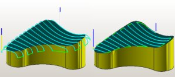

|
 Unigraphics
NX3 CAM Yenilikleri: Unigraphics
NX3 CAM Yenilikleri:
Extend
At Edges:
Bu
ikon finish operasyonlarda takým yolunu parça bitimlerinde
uzatýp uzatmamayla ilgilidir. Eðer ikon iþaretlenirse takým
yolu uzatýlmasý için ölçü istenir eðer iþaretlenmezse takým
yolu parça kenarlarýna kadar, takým yarýçapý parçadan dýþarý
çýkacak þekilde oluþturulur. Takým yolunun uzatýlmasýndaki
amaç parça kenarlarýnda oluþabilecek çapaklarýn finish operasyonda
alýnmasýdýr. Takým yolunu uzatmak için girilecek ölçü iki
þekilde verilebilir. Birincisi Specify komutu seçili
iken direkt olarak mm cinsinden ölçü girilmesi, ikincisi ise
Tool Diameter iþaretliyken takýmýn çapýna göre yüzdesel
olarak takým yolunun uzatýlma miktarýnýn verilmesidir. Bu
deðerin gereðinden büyük verilmesi takýmýn boþta dolaþmasýna
ve zaman kaybýna neden olur. Bu yüzden bu ikonun iþaretlenmesi
ve takým çapýnýn % 20'si gibi bir dýþa çýkma miktarýnýn verilmesi
idealdir.
Remove
Edge Traces:
Bu
ikon, takýmýn parça kenarlarýndan aþaðýya düþme yapýp yapmamasýyla
ilgilidir. Eðer iþaretlenmezse takým yolu parça kenarýndan
programýn belirleyeceði bir ölçü kadar düþme yapacaktýr. Eðer
takýmýn düþme yapmasýný istemiyorsak bu ikonu iþaretlememiz
gerekmektedir. Burada bu ikonun iþaretli olmasý takým yolunun
uzamamasý açýsýndan önemlidir. Yanda bu ikon iþaretli deðilken
ve iþaretliyken oluþan takým yollarý görülmektedir.
Level
to Level:
Bu
ikon Z_Level operasyonunda takýmýn bir kademeyi alýp
ikinci kademeye inerken yapmasý gereken hareketi belirlemek
için kullanýlmaktadýr. Burada dört adet ayrý yöntem bulunmaktadýr.
Bu dört opsiyonunda aktif olmasý için kesme yönlerinin (Cut
Direction) Climb veya Conventional olmasý gerekmektedir.
Eðer kesme yönü olarak Mixed verildi ise sadece iki
yöntem aktif olmaktadýr(Use Transfer Method, Direct on Part).
Yöntemlerden ilki olan Use Transfer Method iþaretli
olduðunda takým bir seviyeden diðer bir seviyeye giderken
Engage/Retract-Method-Transfer Method kýsmýnda ne seçili
ise takým ilk önce oraya gider sonra yeni kademesini iþlemeye
baþlar. Yani biz transfer method olarak Clearance Plane
seçmiþsek takým Z'de bir seviyeyi bitirdikten sonra güvenlik
düzlemine (Clearance Plane) çýkar ve oradan tekrar iþleyeceði
kademeye gelip o seviyeyi iþler. Bu yöntemin dezavantajý takým
yolunun çok kalkma yapmasýdýr. Bu yüzden pek tercih edilmez.
Diðer bir yöntemde Direct on Part seçeneðidir.
Eðer
bu iþaretliyse takým parçadan kalkma yapmadan Z'te bitirdiði
kademeden direkt olarak bir alt kademeye iner. Bu seçeneðin
avantajý parçadan kalkma sayýsýnýn çok az olmasýdýr, dezavantajý
ise takým sürekli ayný noktadan aþaðýya iniþ yaptýðýndan parça
üzerinde bir çizgi býrakma ihtimali olmasýdýr. Bu seçenek
genelde duvar gibi açýk pasolu yüzeylerde kesme yönü mixed
verilerek kullanýldýðýnda randýman saðlamaktadýr. Üçüncü seçenek
olan Ramp on Part ikonu seçili olduðunda ise takým
bir seviyeden diðer bir seviyeye geçerken sürekli ayný yerden
olmak koþulu ile parça üzerinden kalkmadan Engage/Retract-Automatic-Ramp
Angle bölümünde verilen açý deðeri kadar açý yaparak bir
seviye aþaðýya iner. Ancak yine ayný yerden aþaðýya indiði
için parça yüzeyinde izler kalabilir.
Bu
izlerin oluþmamasý için son ikon olan Stagger Ramp on Part
seçeneði bulunmaktadýr. Bu yöntem ile parça üzerinden hiç
ayrýlmadan ve rampayý sürekli takip edecek þekilde helis yaparak
parça üzerinde seviyeleri iner, burada rampa açýsýný Ramp
on Part ikonunda olduðu gibi yani Engage/Retract-Automatic-Ramp
Angle kýsmýnda verilen açý deðeri kadar alýr. Yanlýz bu
son iki yöntemin açýk pasolu yerlerde kullanýlmasý önerilmez.
Ayrýca takým parça üzerinde helisel dalýþlar yaptýðýndan 3Eksen
çalýþmada güçlük çeken tezgahlarda tercih edilmemesi gerekir.
Z_Level
operasyonunda "Cut between levels" opsiyonu:
Bilindiði üzere Z_Level operasyonu dik duvarlarýn finiþinde
kullanýlýyor. NX3 versiyonunun en büyük yeniliklerinden
biri olan bu opsiyon, dik duvarlarla birlikte yatay olan bölgelerde
de, ayný operasyon içerisinde finiþ uygulayarak farklý finiþ
operasyonlarý uygulamaktan bizi kurtarýyor. Böylece birçok
parçanýn iþlenmesi, bir kaba operasyonla bir de Z_Level
Profile operasyonuyla tamamlanabilmektedir. Super finish
operasyonuna kalan talaþý her tarafta eþit miktarda býraktýrmak
amacýylada kullanýlabilir.
Max
Cut Traverse:
Bu
ikon Cut Between Levels ikonu aktif olduðunda kullanýlabilir
hale geçer. Bu ikon belli aralýða sahip iki takým yolu arasýný
takýmýn parçadan çýkmadan birleþtirmesini saðlar. Eðer bu
ikonu iþaretlemezsek NX kendisi takým yollarý arasýndaki mesafe
ne olursa olsun iki takým yolunu birleþtirir. Ýþaretlediðimizde
ise ne kadar aralýða kadar olan takým yollarýný birleþtirmesini
istiyorsak o ölçüyü takým çapýna göre veya direkt olarak ölçü
girerek belirtmemiz gerekir. Burada takýmýn kalkmasýný en
aza indirecek seçimin yapýlmasý önemlidir bu yüzden bu ikonun
iþaretlenmemesi yararlýdýr.
Use
2D Workpiece:
Bu
ikon Use Tool Holder ikonuyla birlikte kullanýlýr.
Daha önceden anlatýldýðý gibi use tool holder ikonu kullanýldýðýnda
ve takým ile birlikte takým tutucuda tanýtýldýðýnda takým
yolu tutucunun çarpmasýný önleyecek þekilde oluþturuluyordu
ve bu yüzden operasyonda iþlenmeyen yerler kalýyordu. Use
2D Workpiece ikonu ile bir önceki operasyonda takým tutucu
yüzünden girilemeyen yerlere yeni operasyonda takým yolu oluþturulur
eski takýmýn dolaþmýþ olduðu yerlerde takým dolaþmaz yani
zaman kaybý engellenir. Bu ikon iþaretlenmezse program bir
önceki takýmýn iþlediði yerleri görmez ve ayný yerleri yine
iþlemeye çalýþýr. Bu yüzden eðer bir önceki Z_Level
operasyonunda takým tutucu tanýtýlmýþ ve Use Tool Holder
iþaretlenmiþ ise ve ikinci bir Z_Level operasyon
gerekiyor ise bu ikonun iþaretlenmesi iþleme zamaný açýsýndan
çok faydalýdýr.
Daha
fazla bilgi için:
www.bogazicicadcam.com/kitap.htm
Ýrtibat:
Ýlhan
KILIÇ
UG Ege Bölge Temsilcisi
ilhan@bogazicicadcam.com
Boðaziçi
CAD/CAM
Ý.A.O.S.B. 10.030 Sokak No:16 D Blok 110 Çiðli / Ýzmir
Tel: (232) 328 22 54
www.bogazicicadcam.com
|